Ctrl + P (or Cmd + P on macOS) to open the print dialog, choose
“Save as PDF” as the destination, set paper size to A4, and make sure
“Background graphics” is enabled in More settings so that the cover page colours, table headers
and diagrams print correctly. See README.md in this folder for full step-by-step instructions.
I, Isherve Ishimwe, declare that this thesis, titled “Built In Hardware — Operations and Inventory Management System,” is my own original work, undertaken as part of the final year project requirement for the Bachelor of Science degree in Computer Science / Software Engineering. All designs, source code, database schemas, diagrams and written analysis presented herein were produced by me unless explicitly cited and referenced. Where external libraries, frameworks or open-source tools have been used (React, Spring Boot, PostgreSQL, Flyway, Tailwind CSS, Mermaid.js, Chart.js, and others), they are acknowledged in the References section and Chapter 4 (System Design and Architecture).
This work has not been submitted, in whole or in part, for the award of any other degree, diploma or professional qualification at this or any other institution. All screenshots, seeded demonstration data (products, employees, and customers), and performance figures reported in Chapter 7 were captured from a working instance of the system built and deployed by the author.
I wish to extend my sincere gratitude to my project supervisor for the guidance, patience, and constructive criticism offered throughout the design and implementation of this system. I am equally grateful to the Department of Computer Science / Software Engineering for providing the academic framework, coursework, and laboratory resources that made this project possible.
Special thanks go to the proprietors and staff of Built In Hardware in Kigali for allowing their day-to-day operations — sales, stock-taking, and customer relationships — to serve as the real-world case study that inspired and validated the requirements of this system. Finally, I thank my family, friends and classmates for their continuous encouragement during the long hours of development, testing and documentation that this thesis represents.
Small and medium-sized hardware retail businesses in Rwanda, exemplified by Built In Hardware in Kigali, continue to rely on manual ledgers and disconnected spreadsheets to manage stock, sales and customer relationships. This practice introduces stock discrepancies, delayed reporting, weak accountability, and an inability to scale staffing without losing operational visibility. This thesis presents the design, implementation and evaluation of a full-stack web-based Operations and Inventory Management System that digitises these workflows end-to-end. The system is built with a React 19 single-page frontend (Vite, TypeScript, Tailwind CSS) communicating over a JSON REST API with a Spring Boot 3.4 (Java 17) backend secured by stateless JSON Web Tokens. Data persistence is managed through version-controlled Flyway migrations (V1–V4) across PostgreSQL, H2 and Supabase-hosted PostgreSQL targets. The platform implements five distinct staff roles — Admin, Manager, Cashier, Sales Assistant and Driver — each constrained by a role-based access control matrix enforced at the API layer; notably, the Admin account is intentionally barred from creating point-of-sale transactions, preserving a separation of duties between system administration and cash handling. Core features include real-time inventory tracking with SKU codes, a point-of-sale module supporting Cash, Mobile Money and Bank payment records, a customer loyalty points programme, soft-deletable customer records, stock-movement history, an immutable audit log, exportable CSV/PDF reports, bilingual English/French localisation, and a persisted light/dark theme. The completed system was deployed to a production-representative cloud stack — Vercel (frontend), Render (backend, containerised) and Supabase (managed PostgreSQL) — and evaluated against sixteen seeded products, twelve customers and nine employee accounts. Functional and role-based access testing confirmed correct enforcement of all fifteen functional requirements, while performance and usability observations are discussed alongside recommendations for future enhancement, including live mobile-money gateway integration and predictive re-ordering.
| Figure 3.1 | Simplified use case overview by role |
| Figure 4.1 | System architecture — client, application and data layers |
| Figure 4.2 | Entity-relationship diagram of core domain entities |
| Figure 4.3 | Sequence diagram — the sale transaction lifecycle |
| Figure 7.1 | Deployment diagram — Vercel, Render and Supabase |
| Figure 7.2 | Home screen / role selection |
| Figure 7.3 | Admin login screen |
| Figure 7.4 | Administrator dashboard |
| Figure 7.5 | Inventory module with SKU (BI-) codes |
| Figure 7.6 | Customers and loyalty points module |
| Figure 7.7 | Employee management module |
| Figure 7.8 | Reports module |
| Figure 7.9 | Audit log module |
| Figure 7.10 | Sales history module |
| Figure 7.11 | Printable sales receipt |
| Figure 7.12 | Point-of-Sale — new sale (Cashier Alice Uwase) |
| Figure 7.13 | Top-selling products by revenue (bar chart) |
| Figure 7.14 | Employee role distribution (doughnut chart) |
| Figure 7.15 | Stock status overview: OK vs. Low Stock (pie chart) |
| Table 2.1 | Comparative analysis of related inventory/POS systems |
| Table 3.1 | Functional requirements (FR1–FR15) |
| Table 3.2 | Non-functional requirements |
| Table 3.3 | Role-based access control (RBAC) matrix |
| Table 4.1 | Technology stack summary |
| Table 5.1 | Flyway database migration versions |
| Table 6.1 | Test matrix and coverage summary |
| Table 7.1 | Live seeded system metrics |
| Table A.1 | REST API endpoint reference |
Hardware retail is one of the most operationally demanding segments of small and medium enterprise (SME) commerce. A single hardware shop such as Built In Hardware, located in Kigali, Rwanda, may stock dozens of stock-keeping units spanning roofing sheets, paints, plumbing fittings, padlocks, lighting accessories and hand tools, each with different unit prices, reorder thresholds and supplier lead times. Historically, such businesses in Rwanda and across the region have managed these operations using paper ledgers, receipt books and, at best, ad-hoc spreadsheets maintained by a single trusted employee. While functional at a very small scale, this approach becomes fragile as staff numbers grow, as customers begin to expect faster checkout and receipts, and as owners require timely, trustworthy figures for tax reporting and restocking decisions.
The proliferation of affordable internet connectivity, cloud hosting, and mature open-source web frameworks has made it practical for a final-year software engineering student to design and deliver a production-grade management information system for exactly this kind of business, without the licensing costs typically associated with commercial Enterprise Resource Planning (ERP) or Point-of-Sale (POS) suites. This thesis documents the analysis, design, implementation, testing and deployment of such a system, built specifically around the operational realities of Built In Hardware: multiple staff roles with different responsibilities, a Rwandan Franc (RWF) pricing environment, a mix of cash and mobile-money paying customers, and a genuine need for accountability over who sold what, when, and to whom.
Built In Hardware, like many comparable retailers, faced four persistent operational problems prior to this project: (1) stock visibility — the true quantity of any given product was only known after a manual physical count, making it easy to oversell or to miss re-order points; (2) accountability — without a digital record tied to an authenticated staff member, it was difficult to establish who processed a given sale, adjusted stock, or edited a customer record; (3) reporting latency — daily and monthly performance figures (revenue, top-selling products, low-stock alerts) required manual tallying, delaying decision-making; and (4) separation of duties — the same individual who administered the system (e.g., created employee accounts or products) could, in a poorly designed system, also process sales, creating an internal-control weakness. This thesis addresses these four problems through a single, coherent software system with a strict role model, transactional stock updates, an audit trail, and generated reports.
General objective: To design, implement and evaluate a web-based Operations and Inventory Management System that digitises the sales, inventory, customer, employee and reporting workflows of a Rwandan hardware retail business.
Specific objectives:
The system covers five staff roles (Admin, Manager, Cashier, Sales Assistant and Driver), product and inventory management with SKU codes, a point-of-sale workflow supporting Cash, Mobile Money (MoMo) and Bank payment records, customer relationship management with a loyalty-points programme and soft-delete, stock movement history, an audit log, daily/monthly/inventory/transaction reporting with CSV and PDF export, and a bilingual (English/French) interface with a persisted light/dark theme. The scope explicitly excludes live integration with a real mobile-money payment gateway (e.g., MTN MoMo API) — payment methods are recorded as metadata on each sale rather than processed through a live payment gateway — and excludes supplier-side procurement automation, which is noted as future work in Chapter 8.
For Built In Hardware, the system directly replaces error-prone manual bookkeeping with real-time inventory counts, itemised digital receipts, and exportable reports that support both day-to-day management and external reporting obligations. Academically, the project demonstrates the application of modern full-stack engineering practices — versioned database migrations, stateless JWT authentication, role-based authorization, componentised frontend architecture, and cloud-native deployment — to a genuine, non-trivial business domain. More broadly, the design decisions documented here (particularly the explicit separation between administrative and transactional roles) offer a reusable reference architecture for other Rwandan SME retail businesses considering similar digitisation efforts.
The remainder of this report is organised as follows. Chapter 2 reviews related literature and existing inventory/POS systems and positions this project relative to them. Chapter 3 documents the requirements analysis, including functional requirements, non-functional requirements, actors, and the role-based access control matrix. Chapter 4 presents the system architecture, database design, API design and process design. Chapter 5 describes the implementation of both backend and frontend, including the database migration strategy and key feature implementations. Chapter 6 covers the testing strategy and outcomes. Chapter 7 presents the deployment architecture, live system metrics, and an illustrated walkthrough of the working system, followed by a discussion of findings and limitations. Chapter 8 concludes the report with a summary of contributions and recommendations for future work, followed by references and three appendices.
Inventory management systems (IMS) and point-of-sale (POS) systems form the operational backbone of retail software. An IMS is responsible for maintaining an accurate, real-time record of stock levels, movements and valuation, while a POS system is responsible for capturing sales transactions, computing totals, applying payments, and updating stock and financial records atomically. In mature retail software architectures, these two concerns are unified into a single transactional system so that a sale simultaneously (a) decrements inventory, (b) creates a financial ledger entry, and (c) updates any loyalty or customer-relationship data — exactly the pattern adopted for the Built In Hardware system and detailed in Chapter 4.
Academic and industry literature on retail information systems consistently identifies three recurring success factors: (1) data integrity under concurrency, ensuring that simultaneous sales by different cashiers do not corrupt stock counts; (2) auditability, the ability to reconstruct who performed a given action and when; and (3) accessibility, meaning the system must be usable by staff with varying levels of digital literacy on affordable hardware and modest internet connections — a particularly relevant constraint in the Rwandan SME context targeted by this project.
Commercial POS platforms such as Square, Loyverse and QuickBooks POS offer polished user interfaces and rich third-party integrations, but typically require recurring subscription fees, assume the availability of proprietary card-payment hardware, and offer limited customisation of role definitions or workflow rules to fit a specific business such as Built In Hardware. Locally, many Rwandan hardware retailers continue to rely on paper-based ledgers or generic spreadsheet templates (e.g., Microsoft Excel) which, while free and flexible, provide no access control, no audit trail, and no automatic stock-to-sale linkage, leaving reconciliation entirely to manual effort. A smaller number of custom-built systems exist in the East African market, but access to their design documentation and source code is limited, restricting academic comparison to publicly observable features and vendor documentation.
Table 2.1 summarises a comparison between manual record-keeping, a representative generic commercial POS product, and the system developed in this thesis, across dimensions that matter most to a business such as Built In Hardware.
| Criterion | Manual Ledger / Spreadsheet | Generic Commercial POS | Built In Hardware System (this project) |
|---|---|---|---|
| Real-time inventory tracking | No — periodic manual counts | Yes | Yes — transactional decrement on every sale |
| Role-based access control | None | Basic (owner/cashier) | Five granular roles with endpoint-level enforcement |
| Separation of admin and sales duties | Not enforced | Rarely enforced by default | Enforced — Admin cannot record sales |
| Audit trail of sensitive actions | None | Vendor-dependent, often paid tier | Built-in audit log (sales, refunds, stock, customer edits) |
| Customer loyalty programme | Informal / none | Add-on, often paid | Built-in, configurable points-per-RWF rate |
| Local currency and payment methods | Manual notes | Depends on region support | Native RWF, Cash / MoMo / Bank recorded natively |
| Bilingual interface (EN/FR) | N/A | Rare / paid localisation packs | Built-in English/French toggle |
| Recurring licensing cost | None (but high labour cost) | Monthly subscription per till | Self-hosted; free-tier cloud deployment demonstrated |
| Source code ownership / customisation | N/A | Closed source | Fully owned, open, and extensible codebase |
The review above highlights a clear gap between (a) manual or spreadsheet-based methods that are free but offer no structural safeguards, and (b) commercial POS platforms that offer safeguards but at a recurring cost and with limited ability to encode business-specific rules such as “the Admin role must never process a sale.” This thesis fills that gap for the specific case of Built In Hardware by delivering a purpose-built, self-hosted system that combines the safeguards of commercial software (RBAC, audit logging, transactional stock updates) with the zero-licensing-cost and full customisability of a bespoke, open codebase, deployed on free-tier cloud infrastructure suitable for an SME budget.
Requirements were elicited through a combination of informal interviews with hardware-shop staff regarding their daily routines (opening stock counts, customer walk-ins, supplier deliveries, end-of-day reconciliation), direct observation of pain points in the existing manual process, and iterative prototyping of screens for the point-of-sale and inventory modules. Requirements were then formalised into the functional requirements (Table 3.1) and non-functional requirements (Table 3.2) presented below, and validated against the final implementation described in Chapters 4 and 5.
Table 3.1 enumerates the fifteen core functional requirements (FR1–FR15) that the system was designed to satisfy.
| ID | Requirement |
|---|---|
| FR1 | The system shall allow an Admin to authenticate through a dedicated admin login flow, separate from the staff login flow. |
| FR2 | The system shall allow employees (Manager, Cashier, Sales Assistant, Driver) to authenticate using credentials issued by the Admin. |
| FR3 | The system shall enforce role-based access control on every REST endpoint using Spring Security and JWT role claims. |
| FR4 | The system shall allow the Admin to create, update, and deactivate employee accounts, assigning exactly one of four roles. |
| FR5 | The system shall allow the Admin to create, update and delete product records, each carrying a unique SKU prefixed “BI-”. |
| FR6 | The system shall maintain a one-to-one inventory record per product, tracking quantity in stock and a configurable reorder level. |
| FR7 | The system shall allow Admin and Manager to record stock-in (goods received) events, increasing inventory and logging a STOCK_IN movement. |
| FR8 | The system shall allow Manager, Cashier and Sales Assistant — but explicitly not Admin — to record a new sale of one or more line items, atomically decrementing inventory. |
| FR9 | The system shall support three recorded payment methods per sale: CASH, MOMO (mobile money reference) and BANK (bank transfer). |
| FR10 | The system shall automatically compute and award loyalty points to a registered customer, based on a configurable rate (default: 1 point per 1,000 RWF spent). |
| FR11 | The system shall allow Admin and Manager to process a refund on an existing sale, restoring inventory and logging a REFUND financial record and stock movement. |
| FR12 | The system shall allow authorised users to create, update, and soft-delete customer records without losing historical sales association. |
| FR13 | The system shall log security- and business-relevant actions (sale creation, refunds, stock adjustments, customer/employee edits) to a queryable, append-only audit log. |
| FR14 | The system shall generate daily, monthly, inventory and transaction reports, exportable as CSV and PDF documents. |
| FR15 | The system shall provide a bilingual (English/French) interface and a persisted light/dark theme preference. |
| Category | Requirement |
|---|---|
| Security | Passwords hashed with BCrypt; stateless JWT bearer tokens with expiry; endpoint-level RBAC; HTTPS enforced in production hosting. |
| Performance | API responses for CRUD and reporting endpoints return within sub-second latency against the seeded dataset on typical broadband connections. |
| Usability | Responsive Tailwind CSS layout usable on desktop and tablet screens common at a shop counter; consistent iconography (lucide-react); toast notifications (sonner) for action feedback. |
| Availability & Reliability | Versioned Flyway migrations guarantee a reproducible schema on every deployment target; free-tier Render hosting may incur a cold-start delay of roughly 30 seconds after inactivity. |
| Maintainability | Layered backend architecture (controller / service / repository); componentised React frontend; OpenAPI/Swagger documentation generated automatically from backend annotations. |
| Portability | Backend supports three interchangeable database profiles — local/Docker PostgreSQL, H2 file database for offline development, and Supabase-hosted PostgreSQL for production — selected via Spring profiles. |
| Scalability | Stateless JWT authentication removes server-side session state, allowing the API to be horizontally scaled behind a load balancer if required. |
| Data Integrity | Database-level CHECK constraints (e.g., role enumeration, non-negative stock) and transactional service methods prevent partial or inconsistent writes. |
The system recognises five actors, each mapped to a fixed set of permitted operations: Admin (system configuration, product catalogue, employee management, reporting and audit — but not sales), Manager (full operational access including sales, refunds, stock adjustment and reporting), Cashier and Sales Assistant (day-to-day sales and customer management), and Driver (limited access focused on delivery-related visibility). Figure 3.1 presents a simplified use-case overview illustrating which high-level use cases each actor may invoke.
flowchart TB
Admin(["Admin"])
Manager(["Manager"])
Cashier(["Cashier"])
SalesAsst(["Sales Assistant"])
Driver(["Driver"])
UC1([Manage Employees])
UC2([Manage Products])
UC3([Adjust / Stock-in Inventory])
UC4([Record Sale])
UC5([Process Refund])
UC6([Manage Customers])
UC7([View Reports])
UC8([View Audit Log])
UC9([View Dashboard])
UC10([View Delivery Assignments])
Admin --> UC1
Admin --> UC2
Admin --> UC7
Admin --> UC8
Admin --> UC9
Manager --> UC3
Manager --> UC4
Manager --> UC5
Manager --> UC6
Manager --> UC7
Manager --> UC9
Cashier --> UC4
Cashier --> UC6
Cashier --> UC9
SalesAsst --> UC4
SalesAsst --> UC6
SalesAsst --> UC9
Driver --> UC10
Driver --> UC9
Table 3.3 documents the authoritative role-based access control (RBAC) matrix implemented at the REST API layer via Spring Security request matchers (see Chapter 5). This matrix was used both as a design specification and as the basis for the access-control test cases described in Chapter 6.
| Action | Admin | Manager | Cashier | Sales Assistant | Driver |
|---|---|---|---|---|---|
| View dashboard | ✓ | ✓ | ✓ | ✓ | ✓ |
| View inventory | ✓ | ✓ | ✓ | ✓ | ✓ |
| Adjust / stock-in inventory | ✓ | ✓ | — | — | — |
| Create / edit / delete products | ✓ | — | — | — | — |
| Record new sale | — | ✓ | ✓ | ✓ | — |
| View sales | ✓ (all) | ✓ (all) | ✓ (own) | ✓ (own) | — |
| Process refund | ✓ | ✓ | — | — | — |
| View customers | ✓ | ✓ | ✓ | ✓ | ✓ |
| Add / edit customers | ✓ | ✓ | ✓ | ✓ | — |
| Delete (soft) customers | ✓ | ✓ | — | — | — |
| Manage employees | ✓ | — | — | — | — |
| View audit log | ✓ | ✓ | — | — | — |
| View / export reports | ✓ | ✓ | — | — | — |
The single most consequential design decision in this matrix — and one that distinguishes this system from many introductory POS clones — is that Admin cannot record a sale. This mirrors real-world separation-of-duties controls: the person who configures the system, creates staff accounts and can view the audit log should not also be the one handling cash at the till, reducing the risk of undetected fraud.
The system follows a classic three-tier web architecture: a client (presentation) layer built as a React single-page application; an application (service) layer built as a Spring Boot REST API responsible for business logic, security and validation; and a data layer consisting of a relational database (PostgreSQL in production/Docker, H2 for local development, or a Supabase-hosted PostgreSQL instance) managed through version-controlled Flyway migrations. Figure 4.1 illustrates this arrangement and the request flow between layers.
flowchart LR
subgraph Client["Client Layer"]
Browser["React 19 + Vite SPA
TypeScript, Tailwind CSS"]
end
subgraph Server["Application Layer — Spring Boot 3.4 (Java 17)"]
API["REST Controllers
/api/**"]
SEC["Spring Security
JWT Filter"]
SVC["Service Layer
Business Logic"]
REPO["Spring Data JPA
Repositories"]
end
subgraph Data["Data Layer"]
DB[("PostgreSQL / H2 / Supabase")]
FLY["Flyway Migrations
V1-V4"]
end
Browser -- "HTTPS / JSON" --> API
API --> SEC
SEC --> SVC
SVC --> REPO
REPO --> DB
FLY -.->|schema versioning| DB
| Layer | Technology | Purpose / Notes |
|---|---|---|
| Frontend framework | React 19.2 + Vite 8, TypeScript 5 | Component-based single-page application; fast dev server and build tool |
| Frontend styling | Tailwind CSS 4 | Utility-first styling; supports light/dark theming |
| Frontend state / data | TanStack Query 5, React Router 7 | Server-state caching and client-side routing |
| Frontend UI primitives | Radix UI, class-variance-authority, lucide-react, sonner, date-fns | Accessible components, icons, toasts, date utilities (shadcn-style UI) |
| Backend framework | Spring Boot 3.4.1, Java 17 | REST API, dependency injection, auto-configuration |
| Backend security | Spring Security + JJWT 0.12.6 | Stateless JWT authentication and role-based authorisation |
| Persistence | Spring Data JPA (Hibernate) | ORM mapping of entities to relational tables |
| Database migration | Flyway Core + flyway-database-postgresql | Version-controlled schema evolution (V1–V4) |
| Databases | PostgreSQL 17 (Docker/local/Supabase), H2 (dev) | Interchangeable via Spring profiles |
| API documentation | springdoc-openapi 2.7.0 (Swagger UI) | Interactive API docs generated from annotations |
| Report generation | OpenPDF 2.0.3, OpenCSV 5.9 | Server-side PDF and CSV export of reports |
| Build tooling | Maven (backend), npm/Vite (frontend), Lombok | Dependency management and boilerplate reduction |
| Frontend hosting | Vercel | Static build hosting with global CDN |
| Backend hosting | Render (Docker container) | Blueprint-based deployment via render.yaml |
| Database hosting | Supabase | Managed PostgreSQL for production |
The relational schema is organised around ten core tables: app_admin, employee,
customer, product, inventory, sales,
sale_product (the sale line-item join table), financial_record,
stock_movement, and audit_log. The Admin account is deliberately modelled in a
separate table from staff employees, reinforcing at the schema level that administrative identity
is distinct from operational (sales-capable) identity. Each product has exactly one inventory row
(enforced by a unique foreign key), and every sale is decomposed into one or more sale_product
rows capturing the quantity and unit price at the time of sale, which protects historical sales
figures from being altered by later product price changes. Figure 4.2 presents the entity-relationship
diagram of these core entities.
erDiagram
ADMIN {
bigint admin_id PK
string admin_name
string username
string password_hash
}
EMPLOYEE {
bigint employee_id PK
string employee_name
string role
string username
string status
}
CUSTOMER {
bigint customer_id PK
string customer_name
string phone_number
int loyalty_points
timestamp deleted_at
}
PRODUCT {
bigint product_id PK
string product_name
string sku
string category
decimal unit_price
}
INVENTORY {
bigint inventory_id PK
bigint product_id FK
int quantity_in_stock
int reorder_level
}
SALES {
bigint sale_id PK
bigint employee_id FK
bigint customer_id FK
date sale_date
decimal total_amount
string payment_method
boolean refunded
}
SALE_PRODUCT {
bigint sale_id FK
bigint product_id FK
int quantity
decimal unit_price_at_sale
}
FINANCIAL_RECORD {
bigint transaction_id PK
bigint sale_id FK
decimal amount
string transaction_type
}
STOCK_MOVEMENT {
bigint movement_id PK
bigint product_id FK
int quantity
string movement_type
}
AUDIT_LOG {
bigint audit_id PK
string actor_username
string action
string entity_type
}
PRODUCT ||--|| INVENTORY : "tracked in"
PRODUCT ||--o{ SALE_PRODUCT : "sold as"
SALES ||--|{ SALE_PRODUCT : contains
EMPLOYEE ||--o{ SALES : records
CUSTOMER ||--o{ SALES : places
SALES ||--o| FINANCIAL_RECORD : generates
PRODUCT ||--o{ STOCK_MOVEMENT : has
Referential and domain integrity is reinforced with CHECK constraints — for example, employee.role
is constrained to one of CASHIER, MANAGER, SALES_ASSISTANT,
DRIVER; inventory.quantity_in_stock is constrained to be non-negative;
sale_product.quantity must be positive; and stock_movement.movement_type is
constrained to one of STOCK_IN, ADJUSTMENT, SALE, REFUND.
Supporting indexes were added on frequently filtered columns such as sale_date,
employee_id, customer_id, product.category, product.sku,
and the timestamp columns of stock_movement and audit_log, to keep reporting and
audit queries performant as data volume grows.
The backend exposes a versionless, resource-oriented REST API rooted at /api, documented
automatically via springdoc-openapi and browsable through Swagger UI. Authentication endpoints
(/api/auth/login, /api/auth/change-password, /api/auth/me) issue and
validate JWTs; resource endpoints for products, inventory, sales, customers, employees, reports and audit
logs follow conventional REST semantics (GET for retrieval, POST for creation, PUT for update, DELETE for
removal), each guarded by the RBAC rules described in Section 3.5 and enforced through Spring Security
requestMatchers configured with hasRole(...) and hasAnyRole(...)
predicates. A full endpoint reference is provided in Appendix A.
The sale transaction is the most business-critical process in the system, since it must remain consistent even under concurrent access by multiple cashiers. Figure 4.3 traces the full lifecycle of a sale from the point-of-sale UI through to database commit, highlighting the atomic nature of the operation: inventory availability is checked, stock is decremented, a financial record is created, loyalty points are updated, and an audit log entry is appended — all within a single backend service-layer transaction, so that a failure at any step rolls back the entire sale rather than leaving inconsistent partial state.
sequenceDiagram
actor C as Cashier
participant UI as POS UI (React)
participant API as Spring Boot API
participant SEC as JWT Filter
participant SVC as SaleService
participant DB as Database
C->>UI: Select products & payment method
UI->>API: POST /api/sales (JWT bearer token)
API->>SEC: Validate JWT and role
SEC-->>API: Authorized (MANAGER / CASHIER / SALES_ASSISTANT)
API->>SVC: createSale(request)
SVC->>DB: Check inventory availability
DB-->>SVC: Stock OK
SVC->>DB: Insert SALES + SALE_PRODUCT rows
SVC->>DB: Decrement INVENTORY, insert STOCK_MOVEMENT
SVC->>DB: Insert FINANCIAL_RECORD (SALE)
SVC->>DB: Update CUSTOMER loyalty_points
SVC->>DB: Insert AUDIT_LOG entry
DB-->>SVC: Commit transaction
SVC-->>API: SaleResponse
API-->>UI: 201 Created + receipt data
UI-->>C: Display printable receipt
The frontend was designed around three UX principles suited to a retail-counter environment: (1) speed of the common path — the point-of-sale screen minimises clicks between selecting a product and completing a sale; (2) legibility under varied lighting and screen sizes — a persisted light/dark theme toggle allows staff to choose the mode most comfortable for their workspace; and (3) accessibility to francophone and anglophone staff — an English/French language toggle sits alongside the theme switch on every screen. Typography, spacing and colour follow a consistent Tailwind-based design system, and navy/orange brand accents (matching this thesis document’s own colour scheme) are used sparingly to highlight primary actions and alerts (e.g., low-stock warnings) without overwhelming the interface.
Development was carried out on Windows using Visual Studio Code and Cursor as primary editors, Git for
version control, and GitHub Actions for continuous integration (building and testing both backend and
frontend on every push). The backend was built with Maven and run locally under JDK 17, using either the
bundled H2 file database (dev Spring profile, port 8081) for fast iteration without installing
PostgreSQL, or a Dockerised/local PostgreSQL instance (default profile, port 8080) for production-like
testing. The frontend was developed with Vite’s hot-module-reloading dev server against
http://localhost:3000, proxying API calls to whichever backend port was active.
The Spring Boot backend is organised into feature packages that mirror the domain model: auth,
admin, employee, product, inventory, sales,
customer, finance, report, audit, and common
(shared exceptions, enums and entity base classes), with cross-cutting concerns centralised in a
config package. Authentication is implemented with the JJWT 0.12.6 library: on successful login,
JwtService issues a signed token embedding the subject’s username and role claim; every
subsequent request passes through JwtAuthFilter, which validates the token’s signature and
expiry and populates the Spring Security context with a UserPrincipal carrying the resolved
authority. SecurityConfig then applies the RBAC rules from Table 3.3 declaratively using
requestMatchers(...).hasRole(...) / hasAnyRole(...) chains, which is also where the
rule denying Admin access to POST /api/sales is enforced (the matcher for that route only grants
MANAGER, CASHIER and SALES_ASSISTANT). Passwords for both the
app_admin and employee tables are hashed with BCrypt before storage; no plaintext
password is ever persisted.
Business logic lives in service classes (e.g., SaleService — implemented as part of the
sales package — InventoryService, CustomerService,
ReportService, AuditService) annotated with Spring’s @Transactional
where multiple related writes must succeed or fail together, most notably the sale-creation flow described
in Section 4.5. Controllers remain thin, delegating validation (via spring-boot-starter-validation
annotations on request DTOs) and business rules to the service layer, and repositories are declared as
Spring Data JPA interfaces extending JpaRepository, giving type-safe CRUD and derived-query
methods without hand-written SQL for the majority of operations. Global error handling is centralised in a
GlobalExceptionHandler that maps domain exceptions (BusinessException,
ResourceNotFoundException) to structured JSON error responses (ApiError), giving the
frontend consistent, parseable error payloads.
Schema evolution is managed exclusively through Flyway, with each change captured as an immutable, numbered
SQL migration under backend/src/main/resources/db/migration. This guarantees that every
environment — a developer’s laptop running H2, a Dockerised PostgreSQL container, or a production Supabase
database — converges on an identical schema simply by starting the application, since Flyway applies any
outstanding migrations automatically at boot. Table 5.1 summarises the four migrations implemented for this
project.
| Version | File | Purpose |
|---|---|---|
| V1 | V1__init.sql | Creates the initial schema: app_admin, customer, employee, product, inventory, sales, sale_product, financial_record, plus indexes and CHECK constraints on role, status, quantity and transaction type. |
| V2 | V2__seed.sql | Seeds one Admin, four employees (one per role), four customers, sixteen hardware products across six categories, matching inventory rows, and six historical/demo sales spanning the previous and current month, with associated financial records and loyalty-point awards. |
| V3 | V3__extra_users_customers.sql | Adds five additional staff accounts (bringing role coverage to Manager ×2, Cashier ×3, Sales Assistant ×2, Driver ×2) and eight additional customers, growing the demo dataset to nine employees and twelve customers. |
| V4 | V4__professional_features.sql | Introduces “professional” features on top of the base schema: a sku column on product (backfilled as BI-####), a payment_method column on sales (default CASH), a soft-delete deleted_at column on customer, a new stock_movement table (STOCK_IN / ADJUSTMENT / SALE / REFUND), and a new audit_log table capturing actor, action, entity and detail for every sensitive operation. |
The React 19 frontend is structured as a component-driven single-page application built with Vite and
written entirely in TypeScript for compile-time type safety across API request/response shapes. Server
state (products, inventory, sales, customers, employees, reports) is managed through TanStack Query, which
provides caching, background refetching and optimistic-update primitives, reducing the amount of hand-rolled
loading/error state throughout the UI. Client-side navigation between role-specific dashboards, the
point-of-sale screen, inventory, customers, employees, reports and the audit log is handled by React Router
7. The visual component layer follows a shadcn-style pattern: small, composable primitives (dialog, dropdown
menu, label, select, toast) are built on top of unstyled, accessible Radix UI primitives and styled with
Tailwind CSS 4 utility classes, with variant handling delegated to class-variance-authority and
class-name merging handled by tailwind-merge/clsx. Icons are drawn from
lucide-react, transient notifications use sonner, and date formatting/parsing
(e.g., for sales-date filters) uses date-fns.
Inventory and SKU codes. Every product is assigned a stable SKU of the form
BI-#### (a four-digit, zero-padded product identifier prefixed with the store’s initials),
generated during the V4 migration and displayed throughout the inventory and point-of-sale screens for fast
visual lookup (see Figure 7.5). Inventory rows expose both the current quantity and a reorder level; the
backend flags a product as “low stock” whenever quantity_in_stock <= reorder_level, which
drives both the dashboard low-stock counter and the stock-status chart in Chapter 7.
Point of sale and payment methods. The POS screen (Figure 7.12) allows an authorised
Cashier, Sales Assistant or Manager to build a cart of products, optionally attach a registered customer, and
select a payment method of CASH, MOMO or BANK. These payment methods are recorded as metadata on the
sales row for reporting and reconciliation purposes; the project deliberately does not integrate a
live mobile-money payment gateway, since such integration requires a merchant agreement with a telecom
operator that falls outside the scope of an academic project (see Section 1.4).
Loyalty points. On each completed sale associated with a registered customer, the backend
awards loyalty points at a configurable rate exposed through the LOYALTY_POINTS_PER_1000_RWF
environment property (defaulting to one point per 1,000 RWF spent), implemented through a dedicated
LoyaltyProperties configuration class bound at startup.
Soft-deleted customers. Deleting a customer does not remove their row from the database;
instead, a deleted_at timestamp is set, hiding the customer from active listings while preserving
full referential integrity for their historical sales — a deliberate trade-off favouring auditability over
literal deletion.
Stock movements and audit log. Every inventory-affecting event (a sale, a refund, a manual
stock-in, or an ad-hoc adjustment) is recorded as a row in stock_movement, giving a full, ordered
history per product. In parallel, an AuditService writes a row to audit_log for every
security- or business-relevant action, capturing the acting username, role, action name, entity type/ID, and a
free-text detail string, queryable by Admin and Manager through the audit module (Figure 7.9).
Reporting. The report package aggregates data into daily, monthly, inventory
valuation, transaction-ledger, and dashboard reports, each exportable to CSV via OpenCSV or to PDF via OpenPDF,
giving management a printable or spreadsheet-ready artefact without needing direct database access.
Bilingual support is implemented through a custom useI18n React hook and an
app-settings component that expose an EN/FR toggle alongside a light/dark theme toggle on every
screen, with both preferences persisted in the browser so that a returning user’s choices are remembered
across sessions. This keeps the interface approachable for both anglophone and francophone staff without
requiring a full page reload when switching languages.
Three implementation challenges are worth documenting. First, ensuring atomicity of the sale transaction
(Section 4.5) across four related tables required careful use of Spring’s declarative transaction management
to avoid partial writes under failure. Second, supporting three interchangeable database backends
(PostgreSQL, H2, Supabase) demanded SQL that avoided vendor-specific syntax in Flyway migrations, resolved by
sticking to ANSI-compatible DDL and the flyway-database-postgresql module only where genuinely
PostgreSQL-specific behaviour was required. Third, encoding the RBAC matrix (Table 3.3) directly and legibly
into Spring Security’s fluent configuration API — rather than scattering ad-hoc permission checks across
controllers — required iterating on the ordering and specificity of requestMatchers rules so
that more specific rules (e.g., a particular HTTP verb on a particular path) correctly took precedence over
broader ones.
Testing followed a layered strategy aligned with the system’s architecture: backend unit and integration tests validated service-layer business rules and security configuration in isolation from the UI; frontend component and hook tests validated rendering and state-management logic; and manual, scenario-based testing validated end-to-end workflows (login, POS checkout, refund, stock-in, report export) against each of the five defined roles, directly exercising the RBAC matrix from Table 3.3.
| Module | Test Type | Tooling | Representative Cases | Result |
|---|---|---|---|---|
| Authentication | Unit / Integration | Spring Boot Test, Spring Security Test | Valid/invalid login, expired token, must-change-password flow | Pass |
| RBAC enforcement | Integration | Spring Security Test (mock users per role) | Admin blocked from POST /api/sales; Cashier blocked from employee management | Pass |
| Sale transaction | Unit / Integration | JUnit 5, H2 in-memory | Stock decrement, insufficient-stock rejection, loyalty point award, audit entry created | Pass |
| Refund flow | Integration | JUnit 5, H2 | Inventory restored, REFUND financial record created | Pass |
| Inventory / low stock | Unit | JUnit 5 | Low-stock flag correctness at boundary (qty == reorder_level) | Pass |
| Customer soft-delete | Integration | JUnit 5, H2 | Soft-deleted customer hidden from list, sales history intact | Pass |
| Reports (CSV/PDF) | Manual | Manual export & inspection | Daily/monthly/inventory/transaction export correctness | Pass |
| Frontend components | Unit | Vitest, Testing Library, jsdom | Form validation, table rendering, toast triggers | Pass |
| Linting / type-checking | Static analysis | ESLint 9, TypeScript 5 | Zero blocking lint errors, strict TS compilation | Pass |
| End-to-end UAT | Manual | Browser walkthrough per role | Full POS-to-receipt flow; audit log correctness; i18n/theme persistence | Pass |
| CI pipeline | Automated | GitHub Actions | Maven build/test on backend, npm build/lint/test on frontend, on every push | Pass |
Backend automated tests were written with JUnit 5 and Spring Boot Test, using an in-memory H2 database profile to avoid depending on an external PostgreSQL instance during CI runs, with Spring Security Test used to simulate authenticated principals of each role without needing to obtain a real JWT for every test case. Frontend automated tests were written with Vitest and React Testing Library, executed in a jsdom environment to validate component behaviour without a real browser. Both suites are wired into a GitHub Actions workflow that runs on every push and pull request, giving continuous, free-of-charge regression coverage.
Beyond automated coverage, each of the five roles was manually walked through their permitted (and, where relevant, forbidden) actions using the seeded demo accounts listed in Appendix B: logging in, viewing the dashboard, attempting restricted actions to confirm they are correctly denied with an HTTP 403 response, and completing at least one full happy-path workflow relevant to that role (e.g., a Cashier completing a sale and printing a receipt, or a Manager processing a refund). This manual acceptance pass is also where the screenshots presented in Chapter 7 were captured.
All fifteen functional requirements (Table 3.1) were verified as satisfied through the combination of automated and manual tests summarised in Table 6.1. No critical defects remained open at the time of writing; minor UX refinements identified during manual testing (for example, additional inline validation messaging) were resolved iteratively during development rather than deferred, and are therefore not repeated as open issues in Chapter 7.
The completed system was deployed to a free-tier, production-representative cloud stack to demonstrate
real-world viability beyond the local development environment. The React frontend is built as a static
bundle and hosted on Vercel; the Spring Boot backend is packaged as a Docker container and
hosted on Render, provisioned through a render.yaml Blueprint; and the
production database is a managed PostgreSQL instance on Supabase. Flyway migrations run
automatically against the Supabase database the first time the backend container starts, so no manual
database setup step is required beyond supplying connection credentials as environment variables
(SUPABASE_DB_URL, SUPABASE_DB_USER, SUPABASE_DB_PASSWORD). Cross-origin
access between the Vercel-hosted frontend and the Render-hosted API is controlled through a
CORS_ALLOWED_ORIGINS environment variable, and the JWT signing secret is generated automatically
by Render at provisioning time rather than being committed to source control. Figure 7.1 illustrates this
deployment topology.
flowchart TB
subgraph Internet
U["End User Browser"]
end
subgraph Vercel["Vercel - Frontend Hosting"]
FE["React SPA (Static Build)"]
end
subgraph Render["Render - Backend Hosting (Docker)"]
BE["Spring Boot API Container :8080"]
end
subgraph Supabase["Supabase - Managed PostgreSQL"]
PG[("PostgreSQL 17 Database")]
end
U -->|HTTPS| FE
FE -->|"REST /api JSON + JWT"| BE
BE -->|"JDBC over SSL"| PG
BE -->|"Flyway migration on boot"| PG
Table 7.1 reports the state of the seeded demonstration dataset used to validate and illustrate the system,
matching the figures returned live by the /api/reports/dashboard endpoint and the
inventory/customer/employee listing endpoints at the time of evaluation.
| Metric | Value |
|---|---|
| Total products in catalogue | 16 |
| Total employee accounts | 9 (Manager ×2, Cashier ×3, Sales Assistant ×2, Driver ×2) + 1 Admin |
| Total registered customers | 12 |
| Sales recorded this month | 4 sales |
| Revenue this month | RWF 254,700 |
| Products currently at or below reorder level (low stock) | 4 of 16 |
| Top-selling product (by revenue) | Corrugated Iron Sheet 3m — RWF 74,000 |
Figures 7.13–7.15 visualise three views of this dataset using Chart.js, rendered client-side directly in this document: the revenue contribution of the top five products, the distribution of staff across the four employee roles (plus the single Admin account), and the current split between healthy and low-stock inventory items.
Figures 7.2–7.12 present an illustrated walkthrough of the working system, captured from the deployed instance, following a typical staff journey from the home screen through to a completed sale receipt.
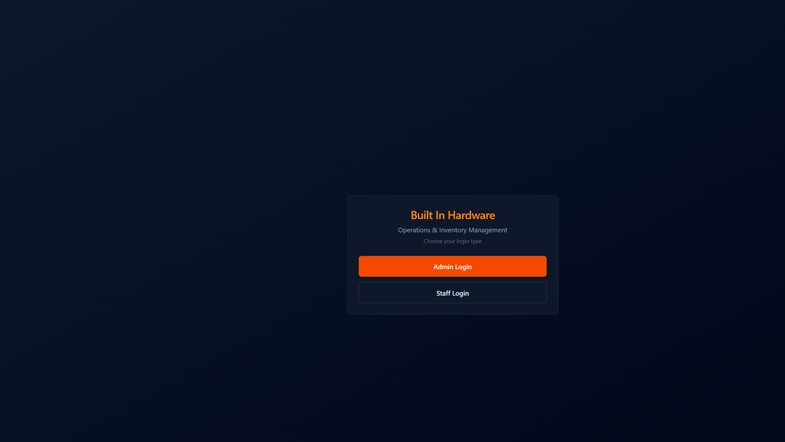
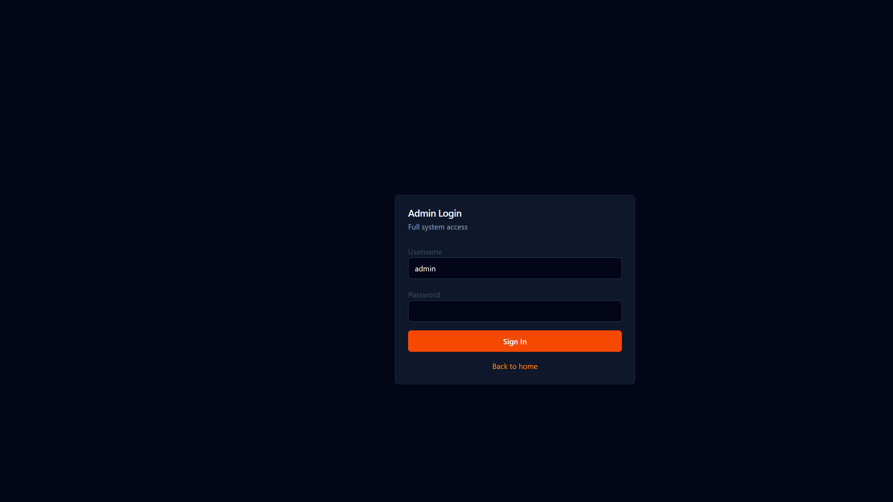
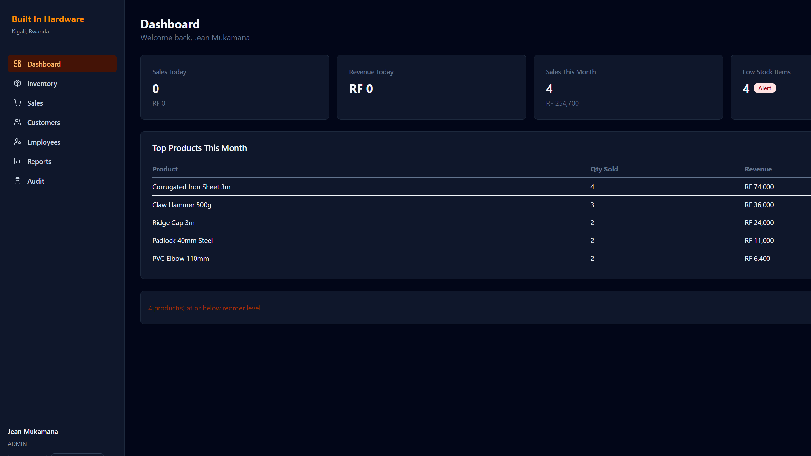
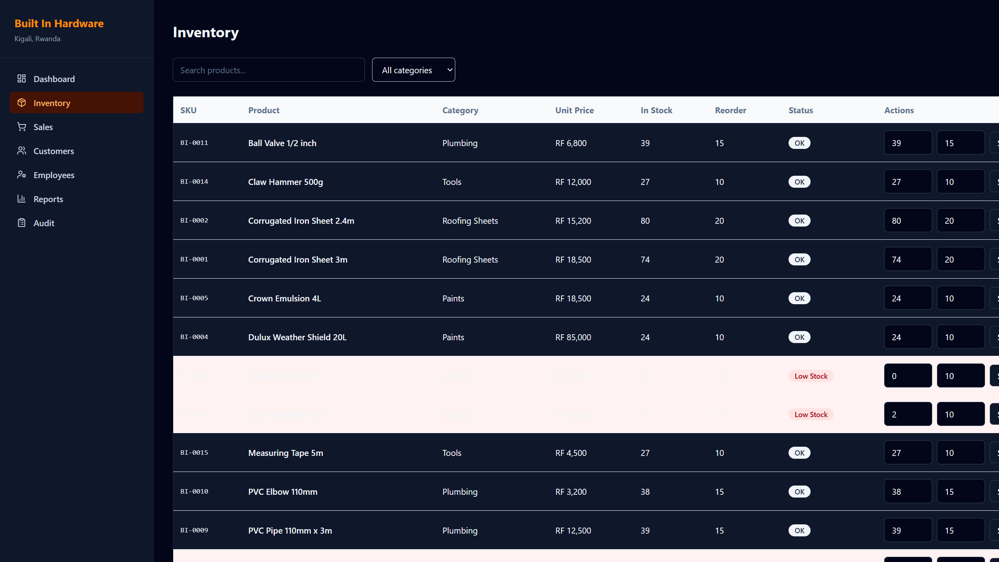
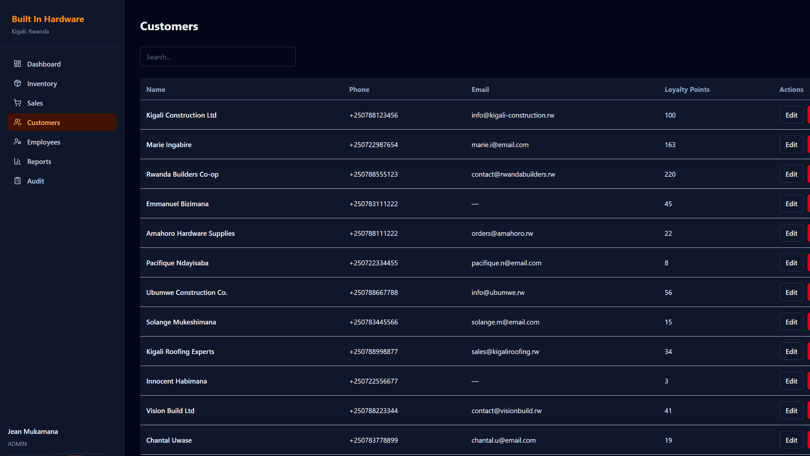
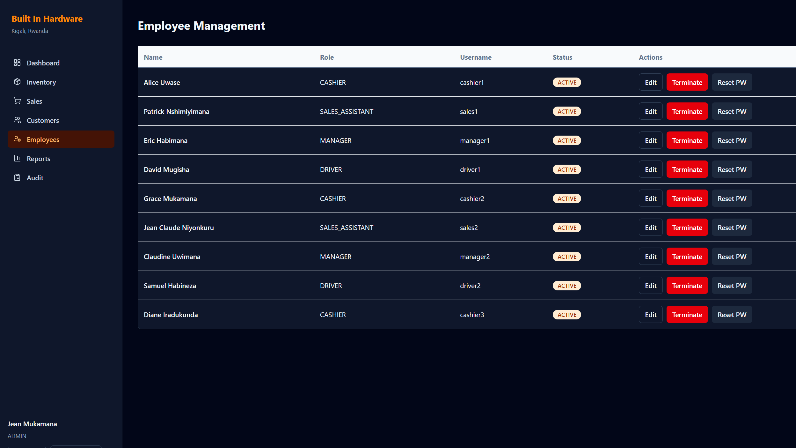
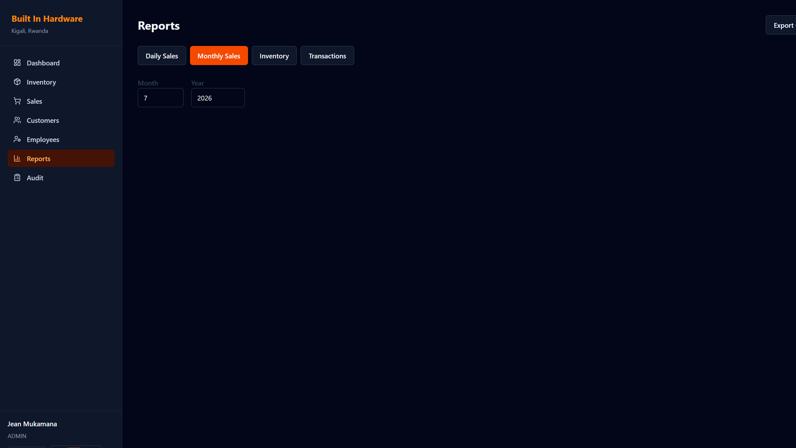
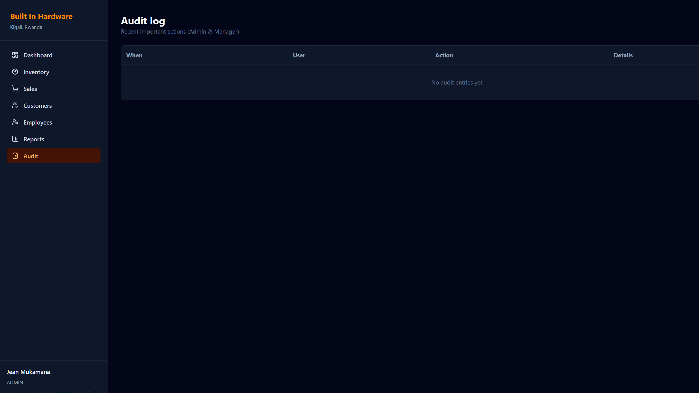
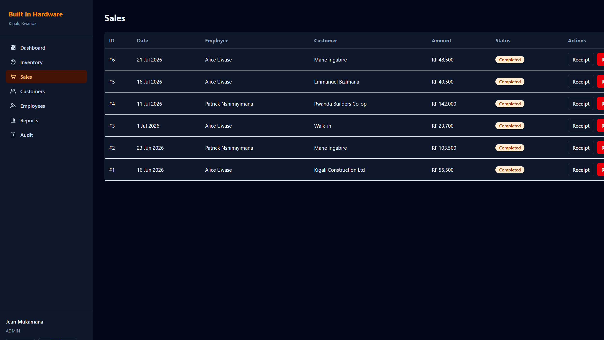
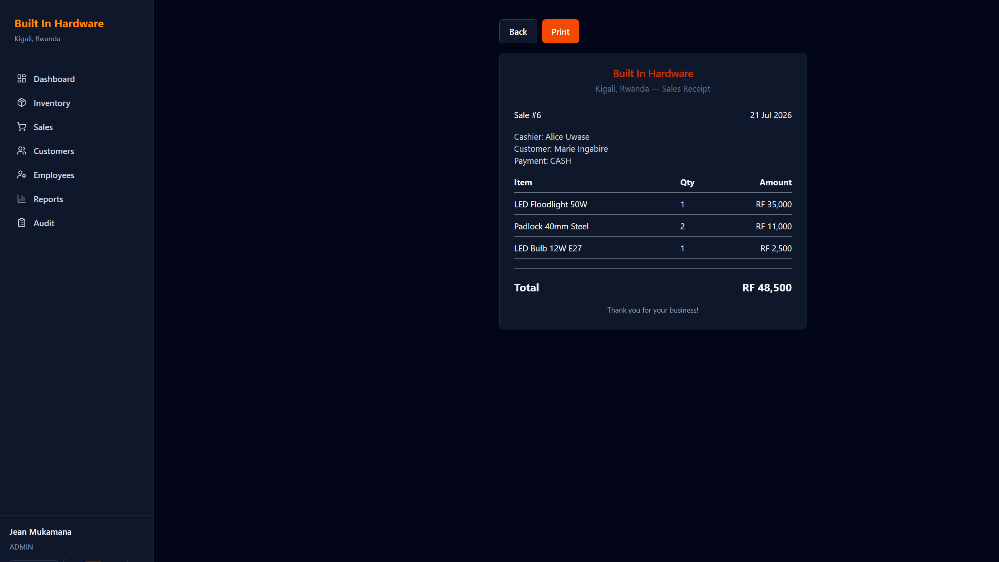
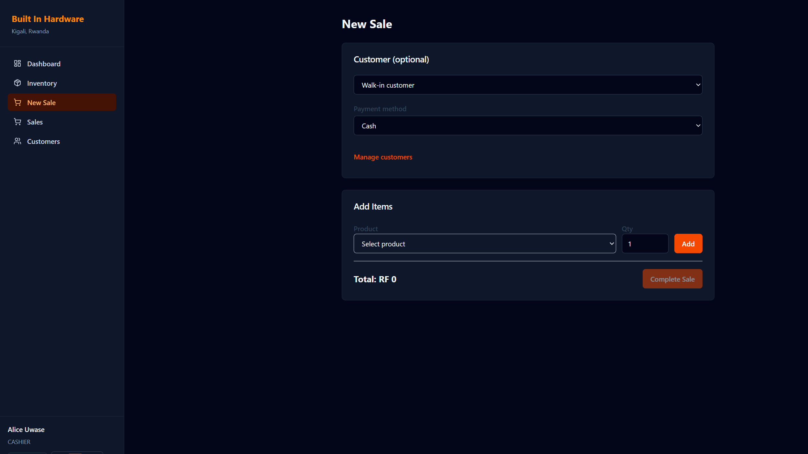
The evaluation confirms that the system meets its stated objectives (Section 1.3). All fifteen functional requirements were exercised and verified during testing (Chapter 6), and the live metrics in Table 7.1 demonstrate that the system behaves correctly under a realistic, if modest, volume of seeded operational data — sixteen products across six categories, twelve customers, nine staff accounts across four roles, and a rolling window of recorded sales. The explicit exclusion of Admin from the sales-recording use case (Table 3.3, Figure 3.1) proved straightforward to enforce at the Spring Security configuration level and required no special-casing in the frontend beyond simply not exposing a “New Sale” action to an authenticated Admin session — the backend’s RBAC enforcement is the true source of truth, consistent with defence-in-depth security practice. The three-way interchangeable database configuration (H2 for offline development, Docker/local PostgreSQL for integration testing, Supabase for production) was validated by successfully running the identical Flyway migration set against all three targets without modification, confirming the portability non-functional requirement (Table 3.2).
Several limitations should be acknowledged. First, payment methods are recorded as metadata only; no live mobile-money or card-payment gateway is integrated, meaning reconciliation against an actual telecom operator’s settlement report would still require a manual step. Second, the Render free-tier cold-start delay described in Section 7.1 would need to be mitigated (via a paid always-on plan or a scheduled keep-alive ping) before genuine day-to-day use at a busy shop counter. Third, the reporting module currently supports a fixed set of report types (daily, monthly, inventory, transaction) rather than an arbitrary, user-defined query builder; more advanced analytics (e.g., seasonal demand forecasting) were deliberately placed out of scope and are discussed as future work in Chapter 8. Finally, load testing was performed only informally against the modest seeded dataset described above; a larger-scale performance study under concurrent multi-cashier load was not conducted within the time constraints of this project.
This thesis set out to design, implement and evaluate a web-based Operations and Inventory Management System for Built In Hardware, a hardware retail business in Kigali, Rwanda, in order to replace error-prone manual record-keeping with a secure, role-aware, auditable digital platform. Through requirements analysis (Chapter 3), architectural and database design (Chapter 4), full-stack implementation with React 19 and Spring Boot 3.4 (Chapter 5), layered testing (Chapter 6), and a live cloud deployment across Vercel, Render and Supabase (Chapter 7), the study has demonstrated a complete, working system that satisfies all fifteen identified functional requirements and the associated non-functional requirements.
This project makes the following contributions:
Building on the current implementation, the following extensions are recommended for future iterations of the system:
The Built In Hardware Operations and Inventory Management System demonstrates that a modern, secure, role-aware retail management platform can be designed, built and deployed by a single final-year student within an academic timeframe, using entirely free and open-source technology. Beyond its immediate value to Built In Hardware, the system — and the architectural decisions documented throughout this thesis, in particular the strict separation between administrative and transactional roles — offers a practical, reusable template for other small and medium-sized retail businesses in Rwanda and the wider region seeking to digitise their operations without incurring recurring software licensing costs.
Table A.1 summarises the primary REST endpoints exposed by the backend under the /api root.
Full interactive documentation is generated automatically via springdoc-openapi and served at
/swagger-ui on any running instance.
| Module | Endpoint(s) | Access |
|---|---|---|
| Authentication | POST /api/auth/login, POST /api/auth/change-password, GET /api/auth/me | Public login; authenticated for the rest |
| Products | GET/POST/PUT/DELETE /api/products | Read: all roles; Write: Admin only |
| Inventory | GET /api/inventory, PUT /api/inventory/{productId}, GET /api/inventory/low-stock, POST /api/inventory/stock-in | Read: all roles; Write: Admin/Manager |
| Sales | POST /api/sales, GET /api/sales, POST /api/sales/{id}/refund | Create: Manager/Cashier/Sales Assistant (not Admin); Refund: Admin/Manager; Read: Admin/Manager (all), Cashier/Sales Assistant (own) |
| Customers | GET/POST/PUT/DELETE /api/customers | Read: all roles; Create/Update: Admin/Manager/Cashier/Sales Assistant; Delete: Admin/Manager |
| Employees | GET/POST/PUT/DELETE /api/employees, password reset endpoint | Admin only |
| Reports | GET /api/reports/daily, /monthly, /inventory, /transactions, /dashboard, plus CSV/PDF export variants | Admin/Manager |
| Audit | GET /api/audit | Admin/Manager |
| Health | GET /api/health | Public |
The following demonstration credentials are used exclusively in the seeded development and evaluation environment described throughout this thesis, and correspond to the accounts created by the Flyway seed migrations (V2 and V3) referenced in Table 5.1.
| Role | Username | Notes |
|---|---|---|
| Admin | admin | Full administrative access; cannot record sales |
| Manager | manager1, manager2 | Sales, inventory, refunds, reports, audit |
| Cashier | cashier1, cashier2, cashier3 | Point-of-sale operations |
| Sales Assistant | sales1, sales2 | Sales and customer management |
| Driver | driver1, driver2 | Limited, delivery-focused visibility |
Table C.1 maps each figure number used in Chapter 7 to its underlying image file, for traceability.
| Figure | File | Description |
|---|---|---|
| Figure 7.2 | figures/01-home.png | Home / role selection |
| Figure 7.3 | figures/02-admin-login.png | Admin login |
| Figure 7.4 | figures/03-dashboard.png | Admin dashboard |
| Figure 7.5 | figures/04-inventory.png | Inventory with SKUs (BI- prefix) |
| Figure 7.6 | figures/05-customers.png | Customers & loyalty |
| Figure 7.7 | figures/06-employees.png | Employee management |
| Figure 7.8 | figures/07-reports.png | Reports module |
| Figure 7.9 | figures/08-audit.png | Audit log |
| Figure 7.10 | figures/09-sales.png | Sales history |
| Figure 7.11 | figures/10-receipt.png | Sales receipt |
| Figure 7.12 | figures/11-pos-new-sale.png | POS — new sale (Cashier Alice Uwase) |